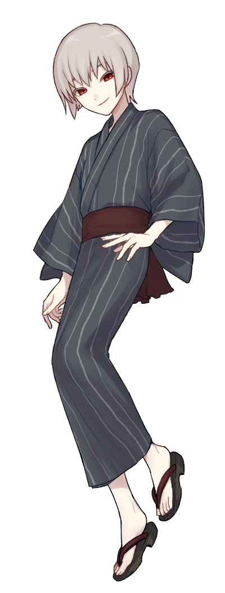

自由気ままな態度
深刻な状況でもどこか楽しそうに振る舞い、思いがけない出来事に興味を示す。
彼岸で出会う謎の少年
IDENTITY UNKNOWN
「君、なかなか面白いね。」
帰り道を知るという、つかみどころのない案内人。

彼岸で美原明人たちが出会う、正体不明の少年。
飄々とした態度と好奇心旺盛な性格が特徴で、特に人間の予想外の行動に強い興味を示す。
彼岸に迷い込んだ人々を此岸へ帰すため、道案内をしている。
一見すると気まぐれで自由に行動しているように見えるが、その素性には謎が多い。
深刻な状況でもどこか楽しそうに振る舞い、思いがけない出来事に興味を示す。
人間が予想外の行動を取ると、その理由を知りたがり、会話を楽しむ。
彼岸に迷い込んだ人々が此岸へ帰れるよう、知っている帰り道を教えようとしている。
少年は明人の予想外の行動に興味を抱く。二人がどのような関係を築いていくのかは、物語の中で描かれていく。